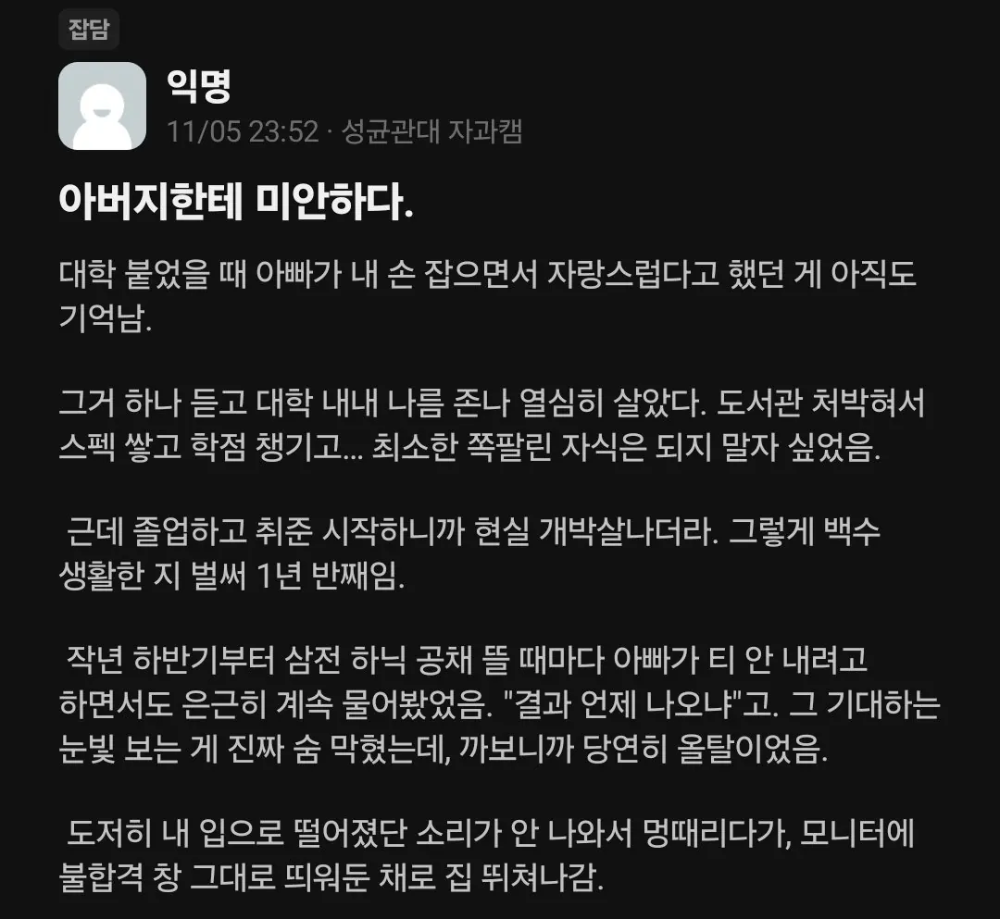
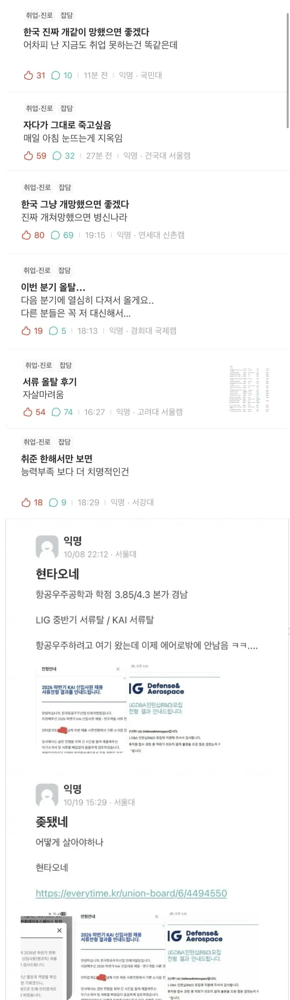
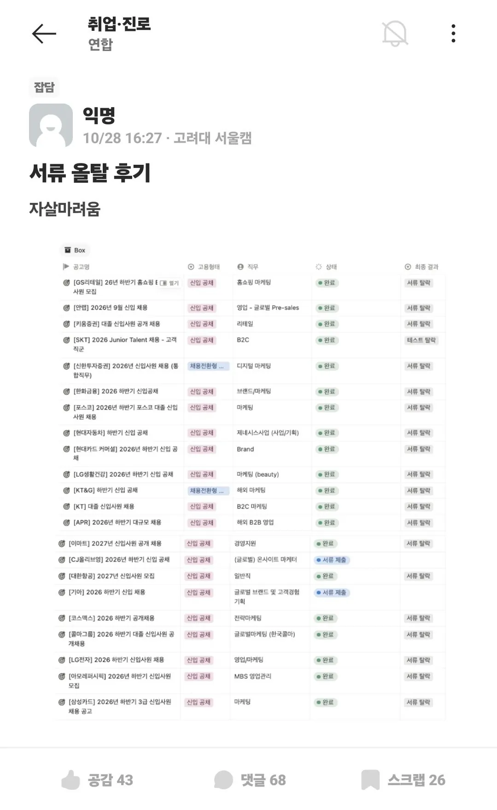
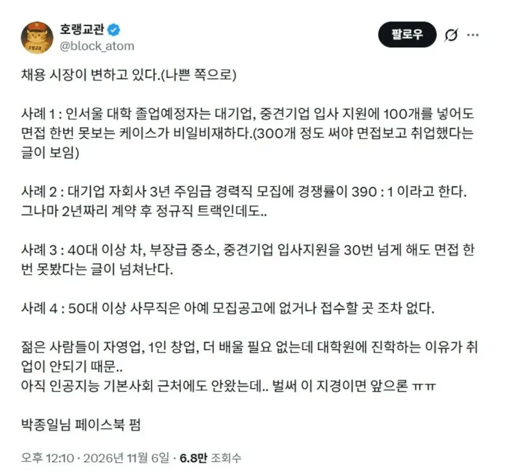

직장생활 개같아도 꾹 참고 다녀라;;;




직장생활 개같아도 꾹 참고 다녀라;;;
인서울에 걸쳐있는 대학 다니는 친구들도 거진 대부분 대기업갔었음.
내가 그 10년전 인서울 중위권 공대 취준생인데 그런 말도안되는 소리 노노
15-17이 내 친구들 졸업한 해인데 몇 명 빼고 다 대기업감. 서울대부터 명지대까지 전부 다. 카이 간 애도 많고 현차 간 애들, 삼성 엘지 널렸어. 내 전공이 전화기긴한데 지금은 전화기도 취업시장 박살난것같은데
내가 기계인데 니 친구들이 잘한거지 그 대학 나온 대부분이 잘갔다는건 개소리임
당장 단순히 숫자로 생각해봐도 니 말은 말도 안됨
내주변충 같은 소리는 그만해
대학 대부분이 잘 갔다는 얘기는 아님. 학점 3.6-3.7은 당연히 넘겨야지. 그 아래는 보면 안된다고 봄. 내 말은 어느정도 성실하고 학점 평균이상 한 애들은 결국 다 잘 갔다는거야. 근데 지금은 학점이 높아도 힘들다니까.
아님 내주변에는 다 3점 후반인데 대부분 못갔음
지금이 더 힘들지 않다는거 아닌데 본문 내용만으로는 미쳐돌아간다 수준을 설명할순 없음
인서울 중위권 기계과가 3점 후반인데 대부분 못갔다고?? 어떻게 그럴수가 있지. 너랑 나랑 졸업 시기도 겹친 것 같고, 나는 ′저런 놈도 취직 되나′ 싶은 애들도 결국 하나씩은 골라잡고 가서 놀랐었는데
학사 대기업은 운칠기삼이니까
거기에 당시 자소서랑 인적성이 학벌 학점보다 중요했음
나도 내주변충으로 말하면 내 친구가 인서울 중위권 대학 석사로 지도교수 은퇴해서 끈없는데 ADD 연구원 무기계약직 취업했는데 그거 쉽다해도 되겠음? 내 친구가 거의 손애 꼽는 운빨이었고 요즘은 박사도 무기잘 없는데
내가 딱 16-17년도 넘어가는 삼성전자 R&D연구원 SSAT 통과해서 하루종일 면접봤는데 면접장 거의 절반이 중고신입 아니면 석사였음
그런게 지금 더 심할텐데 그런거 들고와서 심해졌다 말해야 더 심해진줄 알지 10년전에도 똑같은거 가져와서 심해졌다하면 판단이 안돼
물론 너가 다니던 학교 이름이 있으니 연구직에만 한정해서 봐서 그렇다고 생각이 들기도 해. 연구원하려면 원래 석사까지는 하는게 일반적이었고, 사업부에 들어가는건 다른 얘기잖아. 그래도 무슨 말 하는지 알겠어. 고생했다.
근데 ADD는 정규직 얘기하는거지? 요즘 보면 석사 정규직 진짜 많아. 그래서 무기계약직을 그렇게 특별하다고 할 수 있을지 잘 모르겠네. 박사는 포닥 아니면 계약직으로 올 일이 있나 싶으니 거진 다 정규직이고. 지나가던 사람들 오해할까봐 댓글 남김.
ADD는 무기계약직과 정규직이 따로임 정출연에서는 무기계약 많이함
요즘 정규직 석사많이 뽑는거 맞음 얼마전에 들으니 대기업 붙었다고 신입 정규직 석사 도망갔다더라 10년전에는 박사도 줄섰는데 연봉차이가 점점 커지니까 인기 많이 떨어진듯
나처럼 지방 대기업 계열사로 취직하자....
아...안타까운 현실인데... 방법이 없고...
그렇다고 자기 인생을 갈아 넣어 배웠던 것을 버리려하니 쉽지 않을 것이고, 좆소좆소 거리며 공포를 쌓아왔으니 더욱 안가려하고... 어렵다. 진짜...
매번 말하지만... 우리나라 중소기업 근무자가 70%가 넘음..그러니 내려놓고 내려가야함... 아니면 본인이 더 초라해지고 더 힘들어 질 것임.. 안타깝게도 좆같은 현실이랑 타협해서 가지 않으면 그 자리는 자동화, 외국인들로 더 찰 것임..
그 흔해빠진 중소 조차도 어느순간 나이때매 취업막히기 전에라도 가야함.
나이 안보고 일단 뽑는다? 그게 진짜 좆소일 수도 있음.
저 중간에 저건 노션인가 에어테이블인가
공장 생산직은 구인난이다. 대기업 취업이 힘들다는거지 아래쪽은 들어가긴 쉬워.
이렇게 죽는소리해도 그런데는 안들어감
아래쪽은 차고 넘친다 하지만 내가 여기 나왔는데 이딴 급여로 다녀야되냐? 라고 계속 생각나고 자존심이 앞장슬거야 결국 삼전 하닉 지원만 하다 부모님 등골만 휘고 나 자신만 비참해지지 내가 그랬거든 결국 현실과 타협하는 순간이 올거고 나름 아랫일도 할만하다 생각할거다
난 후회안해 다들 잘 살길 바란다
이 와중 찔린놈 비추 누르고감? 어때 아프지? ㅋㅋㅋ
오히려 저런애들은 공부할때부터 힘들어도 견딘 애들이 많아서 맘먹고 내려오면 열심히 잘하더라...
근데 정작 밑바닥 하류인생애들은 뭐하나 끈기있게 해본적이없으니까 왔다가 힘들면 금방 도망감 ㅋㅋ
취업은 운빨임 그냥 중소기업가서 대기업까지 기어올라가도된다 될놈은 다 된다..
난 한국 중견시작 지금은 일본 적당한 대기업에서 일하는데
한국 중견시절보다 월급이....엔화 1200일때 이직해서 지금 850이라...씨부엉
난좆소 - 좆소 - 대기업 계약 - 중견 - 대기업 테크 연봉 한장 훌쩍 넘김. 나도 대졸후 취업낙방 존나함. 사회생활해보니 기회는 어디에나 있고 어디서든 최선을 다하는게 중요한거라고 .. 그렇게 믿고 살고있음. 힘내자
어지간한 학벌 학연 채울 수 있는 대학 아니면 앞으로 대학은 더 무의미해지지 않을까?
경기권 좆소만 해도 사람 못구해서 비명지름 ㅋㅋ
취업난이 아니라 정확히 대기업/중견등 남에게 자랑할 수 있는 수준의 일자리가 없는거지
연구개발로? 몇년도?